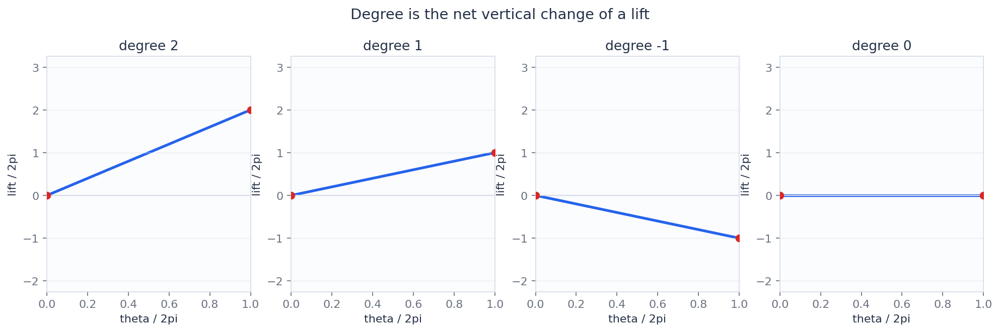
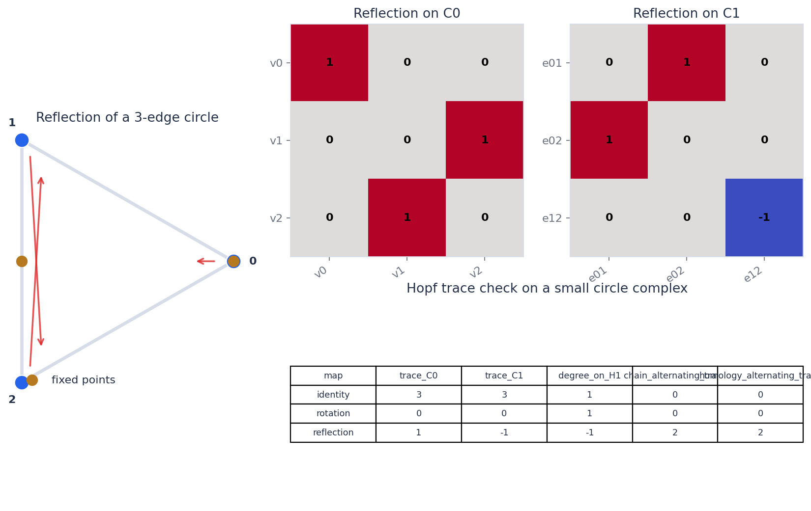
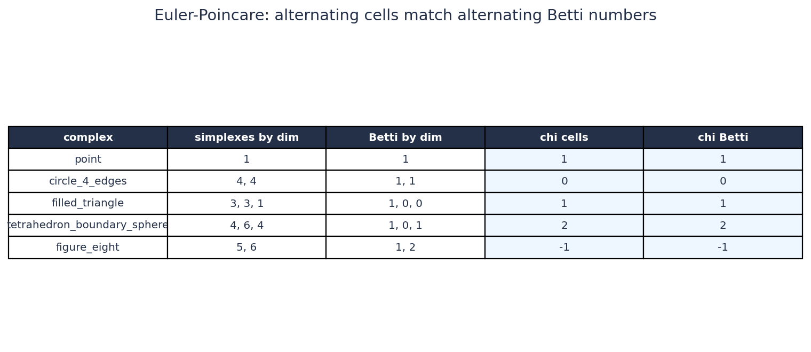
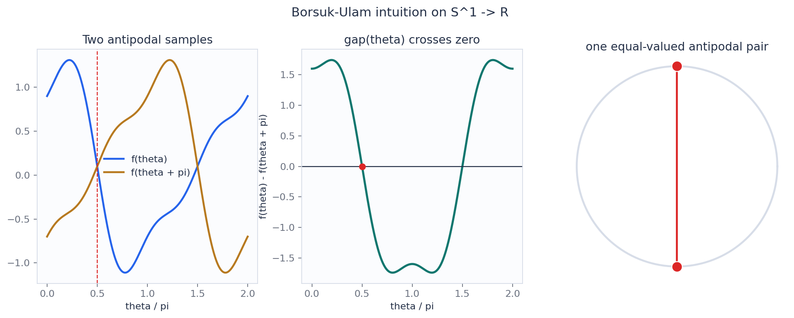
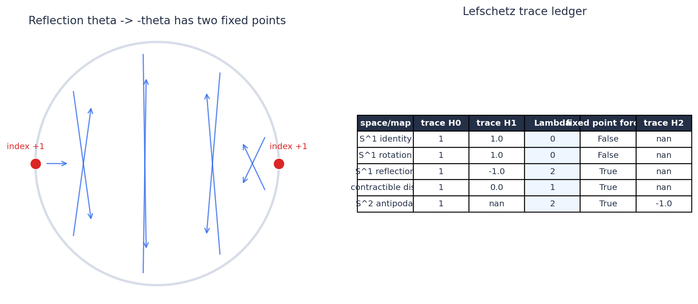
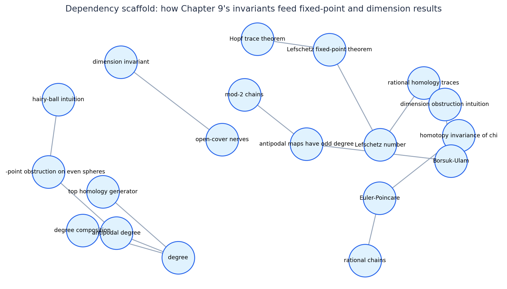
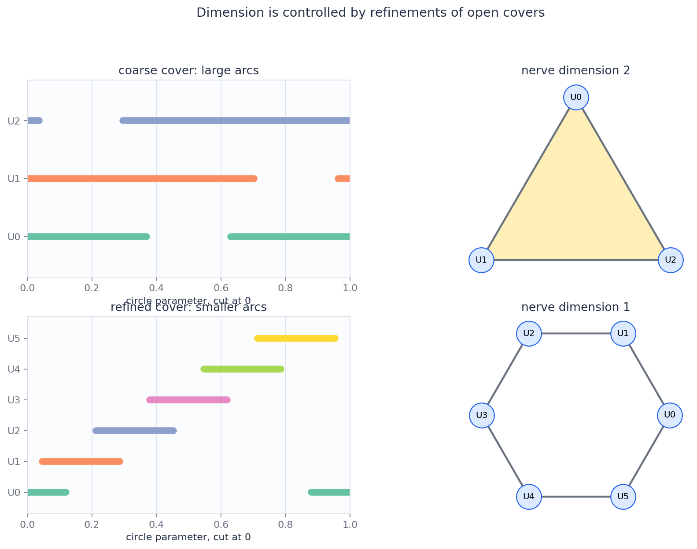

Printed pages 195-212; PDF pages 203-220
Degree And Lefschetz Number
Small homology traces detect large geometric events: winding, antipodal coincidences, fixed points, and dimension obstructions.
Which algebraic number survives homotopy strongly enough to force a geometric conclusion?
A Sphere Map Multiplies The Top Class
For \(f:S^n\to S^n\), the induced map on top homology satisfies \[ f_*([S^n]) = d\,[S^n]. \] The integer \(d\) is the degree of \(f\).
If \(f\simeq g\), then \(f_*=g_*\) on homology, so \(\deg f=\deg g\).
Lifts Turn Winding Into Endpoint Arithmetic

For a lift \(F:[0,1]\to \mathbb{R}\) of a circle map,
The plotted values are \(2,1,-1,0\).
Composition Multiplies The Degree
For \(S^n\xrightarrow{g}S^n\xrightarrow{f}S^n\),
The notebook artifact lets the lift of the composite be inspected against the product of two homology multipliers.
The Chain Map Is Larger Than The Homology Signal

A simplicial map gives matrices on \(C_0\) and \(C_1\). Homology keeps the action on cycles modulo boundaries.
The oriented loop generator maps to its negative, so the induced map on \(H_1(S^1)\) has degree \(-1\).
Alternating Cells Match Alternating Betti Numbers
For a finite complex,
| Complex | cells chi | Betti chi |
|---|---|---|
| point | 1 | 1 |
| circle_4_edges | 0 | 0 |
| filled_triangle | 1 | 1 |
| tetrahedron_boundary_sphere | 2 | 2 |
| figure_eight | -1 | -1 |

When Signs Disappear, Parity Still Obstructs
With coefficients in \(\mathbb{Z}/2\), the signs in a boundary matrix are read modulo two. Orientation reversals no longer change a coefficient by \(-1\).
Antipodal symmetry is detected by whether the top class is hit an odd number of times. That parity is the homological obstruction behind Borsuk-Ulam.
Mod-2 does not mean "no information." It discards orientation signs so that parity information can become stable.
The Antipodal Gap Must Cross Zero

For \(f:S^1\to\mathbb{R}\), define
Then \(g(\theta+\pi)=-g(\theta)\), so continuity forces some \(g(\theta)=0\).
Odd Maps Cannot Be Compressed Away
Every continuous \(f:S^n\to\mathbb{R}^n\) has a point \(x\) with \(f(x)=f(-x)\).
- Assume \(f(x)\ne f(-x)\) for every \(x\).
- Normalize \(f(x)-f(-x)\) to get an odd map \(S^n\to S^{n-1}\).
- Use mod-2 homology to rule out the required parity behavior.
Fixed-Point Pressure Is An Alternating Trace
For a self-map \(f:X\to X\),
If \(X\) is compact and triangulable and \(\Lambda(f)\ne 0\), then \(f\) has a fixed point.
A Reflection Has Lefschetz Number Two

The reflection has degree \(-1\), hence
Chain Traces And Homology Traces Agree Alternatingly
For a chain map of a finite chain complex,
The left side is a finite matrix calculation. The right side is the homological invariant used in the Lefschetz number.
| Map | tr C0 | tr C1 | deg H1 | chain alt | homology alt |
|---|---|---|---|---|---|
| identity | 3 | 3 | 1 | 0 | 0 |
| rotation | 0 | 0 | 1 | 0 | 0 |
| reflection | 1 | -1 | -1 | 2 | 2 |
The trace equality holds even though the individual chain matrices remember the chosen triangulation.
Sphere Degree Predicts When Lefschetz Speaks
For \(f:S^n\to S^n\) of degree \(d\),
If \(\Lambda=0\), Lefschetz does not force a fixed point. It does not prove that fixed points are absent.
| degree | S1 | S2 | S3 | S4 |
|---|---|---|---|---|
| -3 | 4 | -2 | 4 | -2 |
| -2 | 3 | -1 | 3 | -1 |
| -1 | 2 | 0 | 2 | 0 |
| 0 | 1 | 1 | 1 | 1 |
| 1 | 0 | 2 | 0 | 2 |
| 2 | -1 | 3 | -1 | 3 |
| 3 | -2 | 4 | -2 | 4 |
Each entry is \(\Lambda\). Every nonzero entry forces at least one fixed point.
The Invariants Feed Fixed-Point And Dimension Results

Degree feeds antipodal and fixed-point obstructions. Rational traces feed Lefschetz. Cover nerves feed the dimension invariant.
Refinements Control The Dimension Of Nerves

Vertices are open sets. A \(k\)-simplex records a nonempty intersection of \(k+1\) sets.
The coarse circle cover has a filled two-simplex. A refined cover has a one-dimensional cycle, which matches the circle.
Ask What The Invariant Is Allowed To See
Top homology multiplier. It sees orientation and winding behavior and multiplies under composition.
Alternating cell counts match alternating homology dimensions, making \(\chi\) a homological invariant.
Antipodal symmetry plus mod-2 parity forces an equal-valued antipodal pair.
Alternating traces on rational homology force a fixed point whenever \(\Lambda\ne 0\).
Finite chain traces and homology traces agree after alternating, allowing matrix checks to prove topological facts.
Open-cover nerves measure dimension only after allowing refinements that remove misleading intersections.